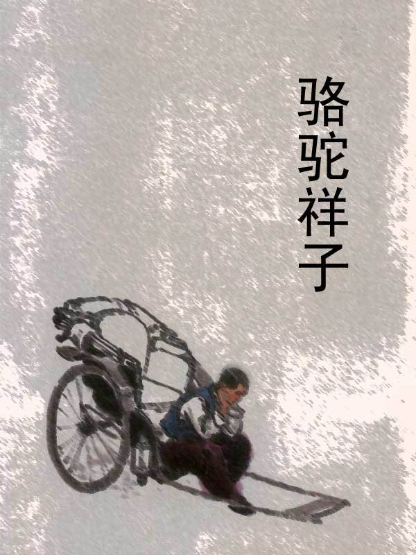

《骆驼祥子》作品人物关系图析
《骆驼祥子》是人民艺术家——老舍（舒庆春，1899-1966）所著的长篇小说，描述了20世纪20年代军阀混战时期人力车夫的悲惨命运。祥子是旧社会劳苦大众的代表人物。
《骆驼祥子》讲述的是中国北平城里的一个年轻好强、充满生命活力的人力车夫祥子三起三落的人生经历。
祥子来自农村，是个破产的青年农民，勤劳、纯朴、善良，保留着农村哺育他、教养他的一切，却再也不愿意回农村去了。从农村来到城市的祥子，渴望以自己的诚实劳动买一辆属于自己的车。做个独立的劳动者是祥子的志愿、希望、甚至是宗教，凭着勤劳和坚忍，他用三年的时间省吃俭用，终于实现了理想，成为自食其力的上等车夫。但刚拉半年，车就在兵荒马乱中被逃兵掳走，祥子失去了洋车，只牵回三匹骆驼。祥子没有灰心，他依然倔强地从头开始，更加克己地拉车攒钱。可是，还没有等他再买上车，所有的积蓄又被侦探敲诈、洗劫一空，买车的梦想再次成泡影。
当祥子又一次拉上自己的车，是以与虎妞成就畸形的婚姻为代价的。好景不长，因虎妞死于难产，他不得不卖掉人力车去料理丧事。至此，他的人生理想彻底破灭了。再加上他心爱的女人小福子的自杀，吹熄了他心中最后一朵希望的火花。连遭生活的打击，祥子开始丧失了对于生活的任何企求和信心，再也无法鼓起生活的勇气，不再像从前一样以拉车为自豪，他厌恶拉车，厌恶劳作。
被生活捉弄的祥子开始游戏生活， 吃喝嫖赌。为了喝酒，祥子到处骗钱，堕落为“城市垃圾”。最后，靠给人干红白喜事做杂工维持生计。祥子由一个“体面的、要强的、好梦想的、利己的、个人的、健壮的、伟大的”底层劳动者沦为一个“堕落的、自私的、不幸的、社会病胎里的产儿，个人主义的末路鬼”。
